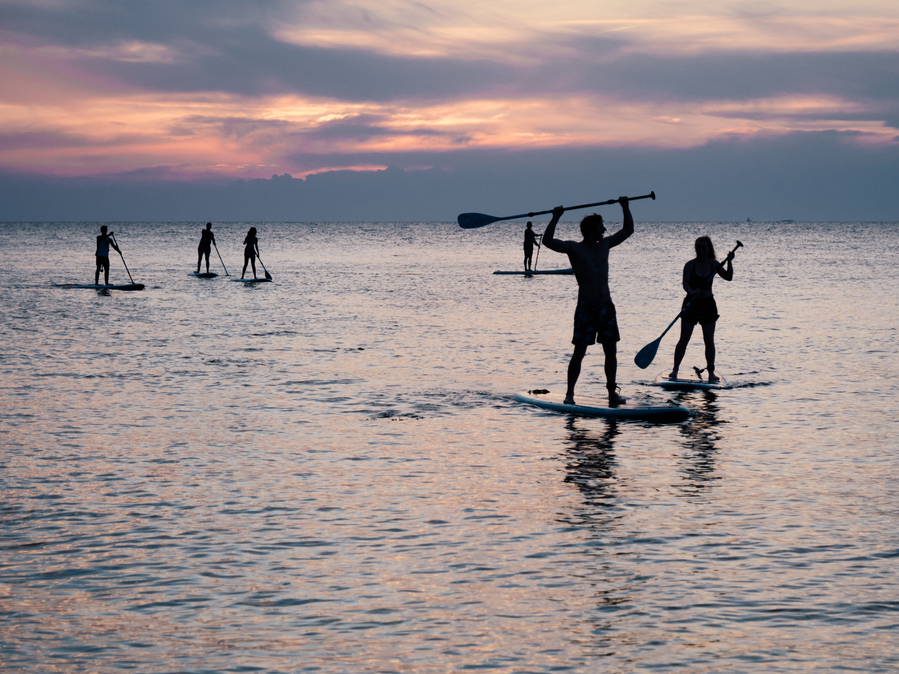

Let's Eat!

Pleasure Island is home to some of the area's favorite restaurants, including award winning seafood and locally sourced fare. With options ranging from fresh oysters and peel-and-eat shrimp to waterfront dining, breakfast diners, take-out, bistros, cafes, and sub shops. Plus, yummy pizza, donuts, ice cream and fudge. Pleasure Island is a popular dining destination for area residents and visitors alike. During the off-season many restaurants offer great deals for the locals.
Our Pleasure Island Chamber of Commerce members offer a wide range of dining options ideal for everyday residents and visitors to the island. Affordable meals for the family, romantic dining for couples, fun get-togethers with friends. We've got the place for you!
Fun Activities
Carolina Beach and Kure Beach offer tons of attractions and fun things to do for visitors and residents of all ages. Come for a beach vacation or a weekend getaway, come for the fun events and festivals, and discover all the unique and wonderful attractions we have to offer.
Rent a charter boat for an amazing fishing experience, book a cruise to explore the Intracoastal Waterway, take a stand-up paddle boarding (SUP) lesson, camp overnight oceanfront or in the Carolina Beach State Park, or spend an afternoon on one of our renowned golf courses just over the bridge. Check out the Boardwalk in Carolina Beach for great shopping, yummy food and treats, amusement rides, and free live music during the summer season. Or visit the renowned Kure Beach Pier for great fishing and gorgeous ocean views.
Rentals, Hotels and Campsites

Carolina Beach and Kure Beach offer diverse accommodations for every kind of visitor- family vacationers on a budget or out to splurge, couples or small group visitors, business travelers, students on spring break, surfers, honeymooners- you name it. If you have a reason to visit, we have a place for you!
Kure Beach is the beautiful, relaxed and friendly neighbor to the South. The town was established in 1870 with Hans Anderson's arrival from Denmark and we have around 1,800 year-round residents. Many of our guests come back year after year to be welcomed with the old-fashioned hospitality.
Kure Beach is mostly residential, dotted with many fine accommodations including oceanfront condos and ocean view motels, condos and cottages to suit all tastes and budgets, including many lavish beach homes- all available for vacation rentals.